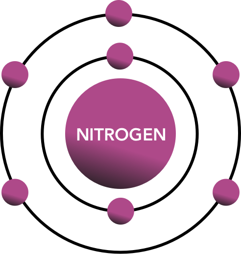
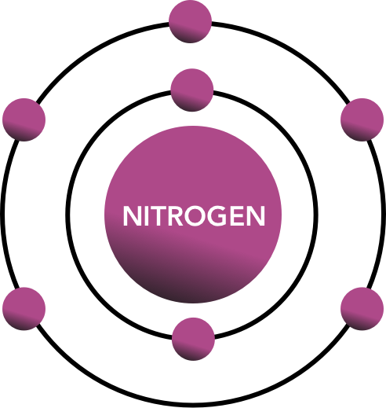

Background
Nitrogen is essential to life on Earth. It is a component of all proteins, and it can be found in all living systems. Nitrogen compounds are present in organic materials, foods, fertilizers, explosives and poisons. In its gas form, nitrogen is colorless, odorless.
Uses and Discovery
It is used to make fertilisers, nitric acid, nylon, dyes and explosives. Nitrogen gas is also used to provide an unreactive atmosphere. It is used in this way to preserve foods, and in the electronics industry during the production of transistors and diodes.
In 1772 Nitrogen was discovered by Daniel Rutherford .